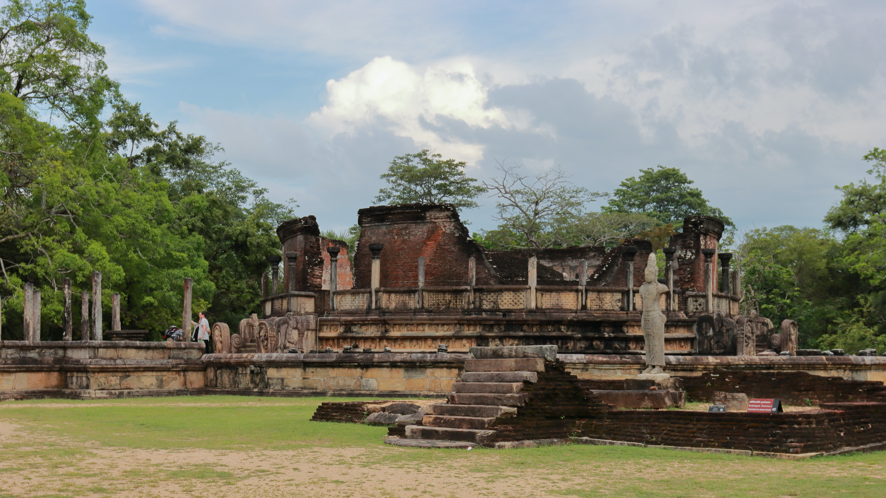

Top historical sights in Sri Lanka

Photo by Dylan Shaw on Unsplash
Sigiriya
Sigiriya or Sinhagiri (Lion Rock Sinhala: සීගිරිය, Tamil: சிகிரியா/சிங்ககிரி, pronounced see-gi-ri-yə) is an ancient rock fortress located in the northern Matale District near the town of Dambulla in the Central Province, Sri Lanka. It is a site of historical and archaeological significance that is dominated by a massive column of rock approximately 180 m (590 ft) high.According to the ancient Sri Lankan chronicle the Cūḷavaṃsa, this area was a large forest, then after storms and landslides it became a hill and was selected by King Kashyapa (AD 477–495) for his new capital. He built his palace on top of this rock and decorated its sides with colourful frescoes. On a small plateau about halfway up the side of this rock he built a gateway in the form of an enormous lion. The name of this place is derived from this structure; Sīnhāgiri, the Lion Rock (an etymology similar to Sinhapura, the Sanskrit name of Singapore, the Lion City).
The capital and the royal palace were abandoned after the king's death. It was used as a Buddhist monastery until the 14th century. Sigiriya today is a UNESCO listed World Heritage Site. It is one of the best preserved examples of ancient urban planning.

Photo by Chathura Anuradha Subasinghe on Unsplash
Sri Dalada Maligawa
The Temple of the Sacred Tooth Relic or Sri Dalada Maligawa, (Sinhala: ශ්රී දළදා මාළිගාව) is a Buddhist temple in Kandy, Sri Lanka. It is located in the royal palace complex of the former Kingdom of Kandy, which houses the relic of the tooth of the Buddha. Since ancient times, the relic has played an important role in local politics because it is believed that whoever holds the relic holds the governance of the country. The relic was historically held by Sinhalese kings. The temple of the tooth is a World Heritage Site mainly due to the temple and the relic.Bhikkhus of the two particular chapters, the Malwathu chapters and Asgiri chapters, conduct daily worship in the inner chamber of the temple. Rituals are performed three times daily: at dawn, at noon and in the evenings. On Wednesdays, there is a symbolic bathing of the relic with a herbal preparation made from scented water and fragrant flowers called Nanumura Mangallaya; this holy water is believed to contain healing powers and is distributed to those present.
The temple sustained damage from bombings by Janatha Vimukthi Peramuna in 1989, and by the Liberation Tigers of Tamil Eelam in 1998. However, it was fully restored each time.

Photo by රත්න දීපය - Rathna Deepaya on Unsplash
Polonnaruwa Hatadage
Hatadage (Sinhala: හැටදාගේ) is an ancient relic shrine in the city of Polonnaruwa, Sri Lanka. It was built by King Nissanka Malla, and had been used to keep the Relic of the tooth of the Buddha. The Hatadage had been built using stone, brick and wood, although only parts of the brick and stone walls now remain. It appears to have been a two-storey structure, but the upper storey has now been destroyed. Three Buddha statues carved out of granite rock are located within a chamber of the shrine. It is close to the northern edge of the Dalada Maluva there, the quadrangular area which contains some of the oldest and most sacred monuments of the city. Its entrance, which is oriented to the south, directly faces the entrance of the Polonnaruwa Vatadage. The Galpotha stone inscription is near its eastern side, while the Atadage lies to its west.Several historical sources including the Rajaveliya, Poojavaliya and the Galpotha inscription itself mention that it was built in sixty hours. Since the Sinhalese word Hata means sixty and Dage means relic shrine, it is possible that the structure was named Hatadage to commemorate this feat. Another theory is that it is so named because it held sixty relics. The tooth relic was presumably kept in the upper storey.

Anuradhapura
Anuradhapura is a historical paradise as it houses several heritage monasteries, palaces and monuments. It is known for its vast dagobas or brick stupas, ancient ponds and pools and magnificent temples. The city was established as the first capital of Sri Lanka in 377 BC. It was also at this time that Anuradhapura rose to prominence as a seat of political and economic importance. Anuradhapura was built around a cut piece from the Bodhi Tree, or the 'tree of enlightenment', which is considered sacred by Buddhists. This city was on the peak of political and religious activities for around 900 years. It was invaded in 998 AD, after which it lost its importance. After being overlooked for several years, this World Heritage Site is now accessible again. Currently, Anuradhapura is an important religious site and a popular tourist attraction.Apart from the Dagobas, the most popular tourist attractions in Anuradhapura are its ruins, or Anuradhapura World Heritage Site, the scared Maha Bodhi tree, Lovamahapaya or Brazen Palace, Archeological museum, Isurumuniya Vihara or rock temple, Ratna Prasada or jewel palace, Royal Pleasure Gardens, Kuttam Pokuna or ponds, Buddha's samadhi, Royal Palace and many more. Amongst the well-known dagobas are Mirisaveti, Ruwanveli, Abhayagiri, Jetavanarama, Thuparama, Lankarama, and many more. Interestingly, the monasteries in Anuradhapura occupy a whopping 16 square miles by area. With this, it is evident that Anuradhapura is culturally and religiously significant to an unimaginable extent.
Authentic Buddhist traditions, archaeological ruins, lavish palaces, traditional monasteries and informative museums define the grandeur of Anuradhapura. Even though it is a large town, Anuradhapura gives the feel of being in a village. With its well preserved cultural sites, ponds and monuments, Anuradhapura is a well-established tourist attraction in Sri Lanka. Tourists visit this town for a rejuvenating getaway, to seek peace and to satiate their inquisitiveness.